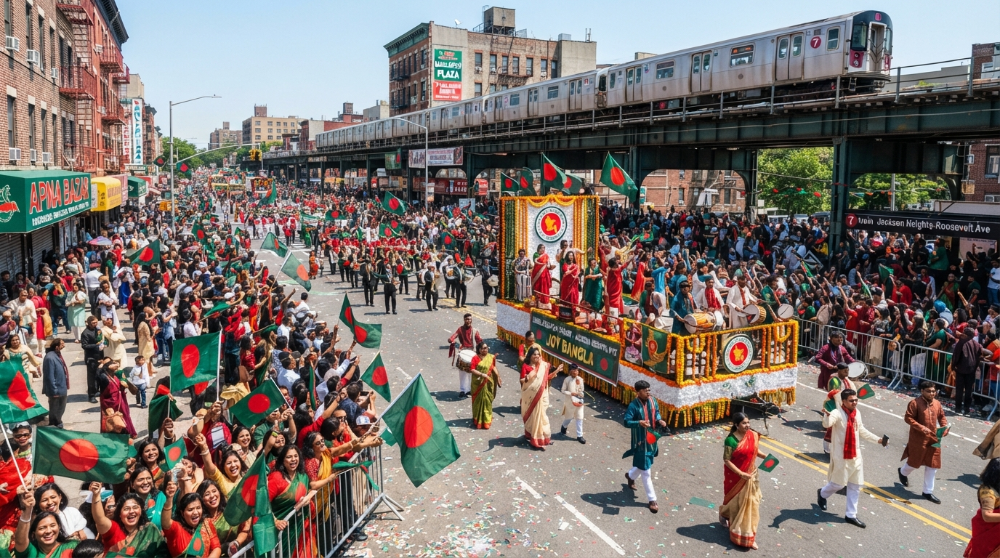
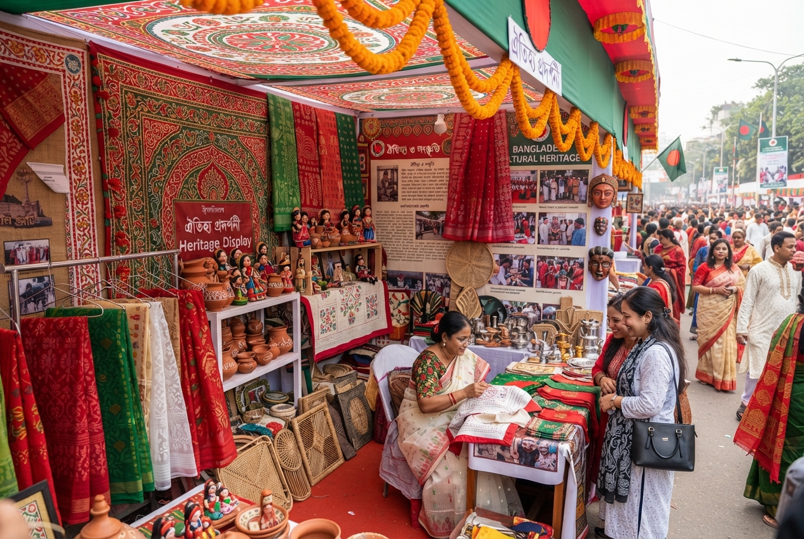
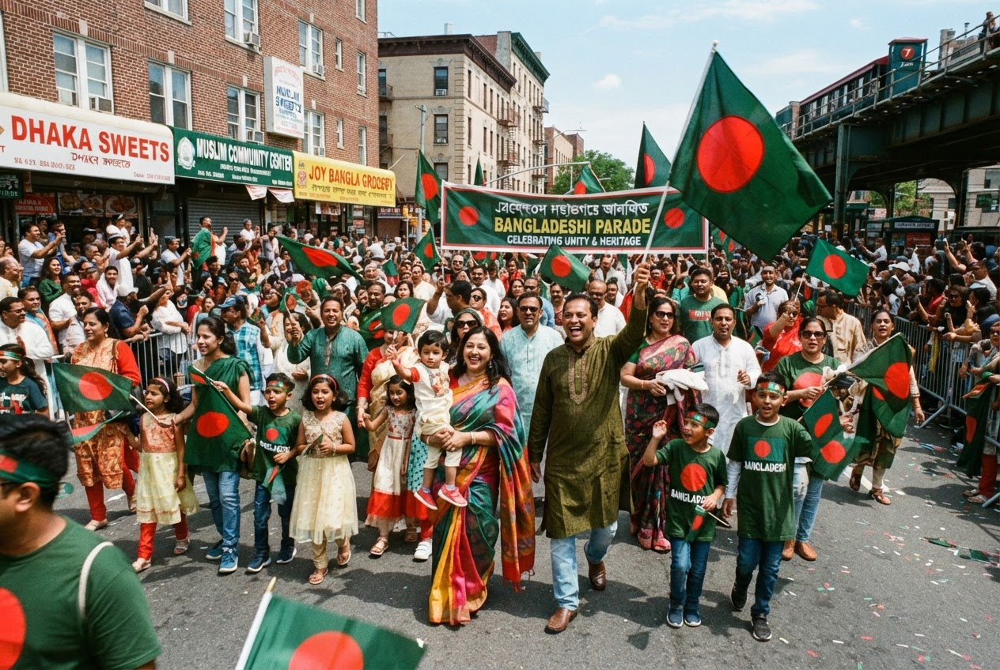
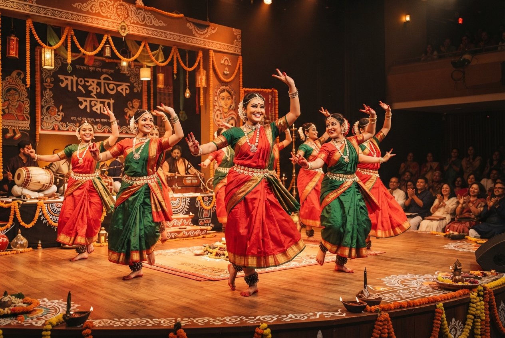
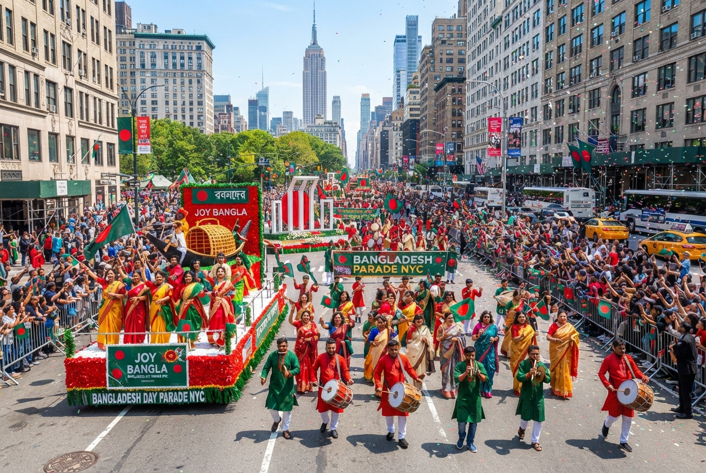
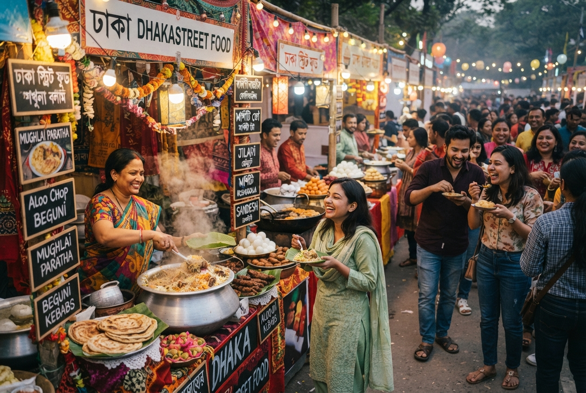

Date
Sunday, May 17, 2026

May 17, 2026 • Jackson Heights, Queens
Join thousands celebrating Bangladeshi culture, heritage, and community in the heart of Queens.
Our Story
The Bangladesh Day Parade is New York City’s premier celebration of Bangladeshi culture, heritage, and community.
Held annually in Jackson Heights, Queens, this vibrant event brings together thousands of Bangladeshi-Americans and friends from all backgrounds to celebrate the rich traditions of Bangladesh.
First organized in 1987, the parade has grown from a small community gathering to one of the largest Bangladeshi diaspora celebrations in the United States. The event showcases traditional music, dance, food, and cultural displays while highlighting the contributions of Bangladeshi-Americans to New York City’s multicultural fabric.
Organized by Bangladesh Society, Inc. in association with Humanity Empowerment Rights & Foundation and the Jackson Heights Bangladeshi Business Association.

Plan Your Day
Everything you need to know about the 2026 parade
Sunday, May 17, 2026
9:00 AM – 2:00 PM
Formation begins at 8:00 AM37th Avenue
Jackson Heights, Queens, NY69th Street to 87th Street
Along 37th Avenue37th Avenue
Between 69th St & 70th AveFree & Open to All
Family-friendly eventTake the 7 train to 74th Street–Broadway station. The parade route is a short walk from the station.
Multiple bus routes serve Jackson Heights. Check MTA schedules for Q32, Q33, and Q47 buses.
May 17, 2026
A full day of celebration and cultural pride
Participants gather and organize at the formation area on 37th Avenue between 69th Street and 70th Avenue.
Welcome remarks by organizers and distinguished guests, including elected officials and community leaders.
Community festivities begin with music, cultural activities, and a warm welcome for paradegoers.
Traditional Bangladeshi music and dance at the main stage, featuring artists from Bangladesh and local cultural groups.
Recognition ceremony honoring community leaders, volunteers, and organizations for their contributions.
The grand procession starts along 37th Avenue from 69th Street to 87th Street, featuring floats, cultural groups, and community organizations.
Enjoy authentic Bangladeshi cuisine from local vendors, including biryani, sweets, and traditional street food.
Past Celebrations
Moments of culture, unity, and pride




Stronger Together
Joining together to celebrate our community
Social, cultural, and professional organizations from across the New York metropolitan area participate in the parade.
Prominent political leaders and public figures celebrate the contributions of Bangladeshi-Americans.
Bangladeshi-American police officers march in uniform, showcasing their service to the community.
Traditional music, dance, and theatrical performances celebrating Bangladeshi heritage.
Colorful floats featuring Bangladeshi cultural symbols and community themes.
Make a Difference
Be part of this historic celebration
Help make the parade a success with setup, coordination, crowd management, and cleanup.
March with your organization, cultural group, or community association.
Support the parade and gain visibility for your business while contributing to this cultural celebration.
Connect With Us
Get in touch with the organizing committee